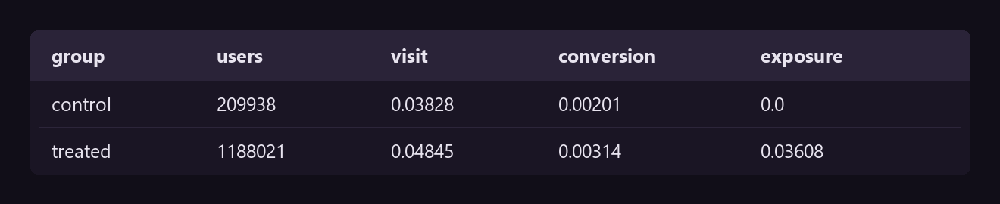
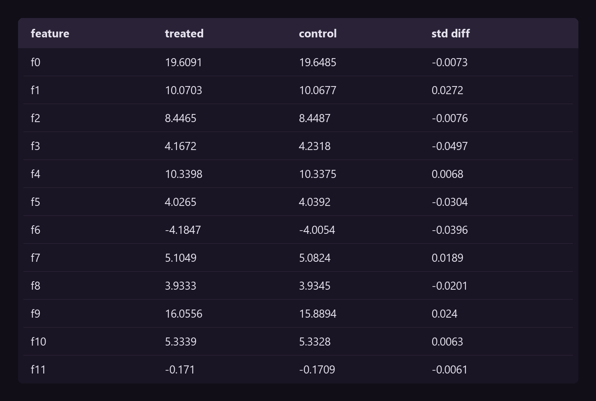
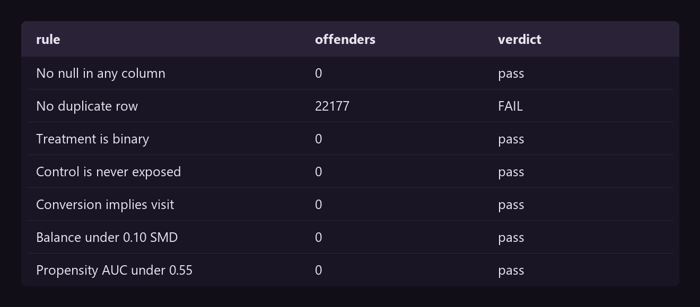
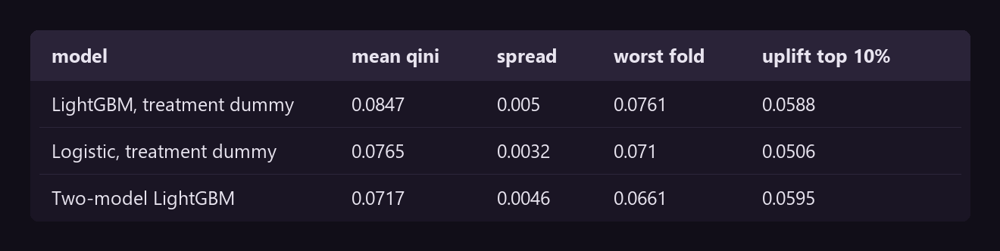
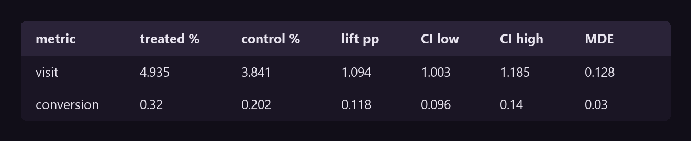
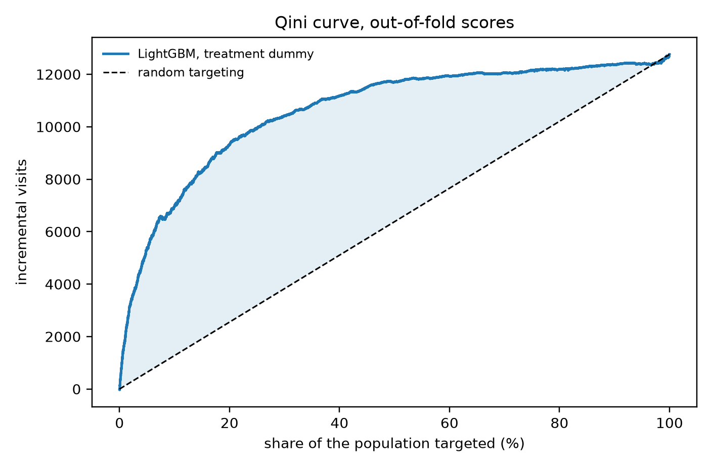
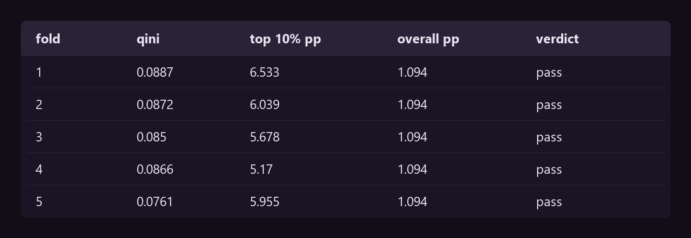
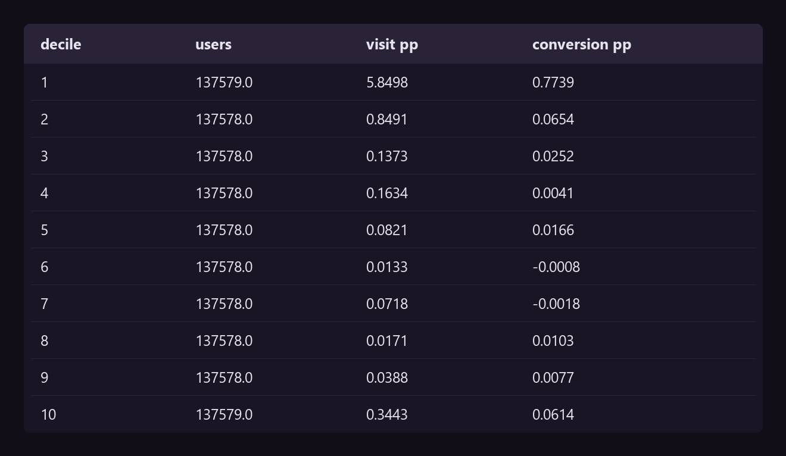
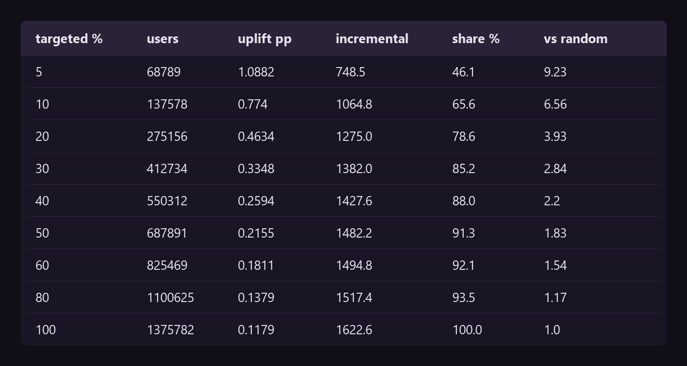

Back to Projects

Paid Advertising Uplift
A response model finds who converts. An uplift model finds who converts because of the ad. The gap between them is the budget.
A response model finds who converts. An uplift model finds who converts because of the ad. The gap between them is the budget.
The second project asked whether price moves volume. This one asks a harder question: not who converts, but who converts because of the ad.
A response model answers the first. It ranks users by how likely they are to buy, and an advertiser who bids on that list pays for sales that were coming anyway.
An uplift model answers the second. It ranks users by the difference the ad makes to them. The two lists are not the same people, and the gap between them is the budget.
CRISP-DM is the Cross-Industry Standard Process for Data Mining. It keeps an analysis from becoming a tour of techniques.
It sets six phases, and each one answers a defined question before the next one starts. The second project used it on SQL. This one uses it on a model.
CRISP-DM is a cycle. Each loop returns to the phase before it: data refines the question, the model refines the preparation, evaluation returns the answer to the business. Every turn removes noise.
No code yet
An advertiser holds one budget and bids on a population. Every user on the list costs money at auction. Every user off it sees nothing.
Which users convert because of the ad?
The treated group converts more. That fact mixes the ad working with the treated group being different. Uplift is what is left after the control group is subtracted.
The next two lines are written before the first model runs, so no result sets its own bar.
Phase 5 returns the verdict, and the verdict decides the recommendation.
pandaspropensity AUCSMDquality view
Every data set arrives claiming to be clean. This one arrives claiming something stronger: that it is a randomised trial. Seven rules test both.
The case is CRITEO-UPLIFTv2, 13,979,592 users from incrementality tests on real-time bidding. A random part of the population was held out of the auction. The notebook works on a deterministic 10% sample.
The rates each group produced
rates = raw.groupby("treatment").agg(
users=("visit", "size"),
visit_rate=("visit", "mean"),
conversion_rate=("conversion", "mean"),
exposure_rate=("exposure", "mean")).round(5)
The control group has an exposure rate of zero, by construction. A user held out of the auction cannot be shown an ad, so nothing can win it.
exposure is therefore not randomised. Winning an auction depends on the user and on the competition. Every model below trains on treatment.
Is the assignment balanced?
smd["std_mean_diff"] = ((treated[FEATURES].mean() - control[FEATURES].mean())
/ np.sqrt((treated[FEATURES].var() + control[FEATURES].var()) / 2))
Every standardised difference sits under 0.05, and the convention is that anything under 0.10 is balance.
The check that licenses every causal claim
propensity = make_pipeline(StandardScaler(), LogisticRegression(max_iter=1000))
scores = cross_val_predict(propensity, check[FEATURES], check.treatment,
cv=StratifiedKFold(3, shuffle=True, random_state=SEED),
method="predict_proba")[:, 1]
auc = roc_auc_score(check.treatment, scores)The AUC is 0.5114. A model that cannot predict who was treated is the evidence that nothing but chance decided it. Diemert et al. run the same check on this data.

Six rules pass. The failure is 22,177 duplicated rows.
The features are dense and anonymous, so a profile that repeats is the same twelve numbers arriving twice. 7,549 of those profiles sit in both groups.
Answer. The randomisation holds. The duplicates leave in phase 3, and exposure stays out of every model.
drop_duplicatesStratifiedKFoldlayers
Premise: a fold that holds no positive row cannot measure anything.
Three layers, as in the SQL projects. Landing keeps everything. Conformed removes the duplicates. Model ready pairs the group with the outcome.
The stratification label
clean = raw.drop_duplicates().reset_index(drop=True)
print(f"landing {len(raw):,} rows")
print(f"conformed {len(clean):,} rows ({len(raw) - len(clean):,} duplicates removed, "
f"{100 * (len(raw) - len(clean)) / len(raw):.2f}%)")
X = clean[FEATURES]
y_visit = clean["visit"].to_numpy()
y_conv = clean["conversion"].to_numpy()
treat = clean["treatment"].to_numpy()
# One label per fold, so a fold holds the same mix of group and outcome.
fold_label = np.char.add(treat.astype(str), y_visit.astype(str))1,375,782 rows survive. Uplift is a difference between two groups, so the binding number is the smallest cell rather than the row count.
The control-visit cell holds 8,037 rows, about 1,600 a fold. That is enough to rank on.
Conversion is a different matter. The sample carries 4,157 conversions and only 423 of them are in the control group, which is 85 a fold. A ranking cannot be measured against 85 rows.
Answer. The models rank on visits. Phase 6 then asks the question that decides the budget: does that ranking also deliver conversions?
scikit-upliftLightGBMnested CVQini
Premise: the sophisticated model wins.
Three models, three families. The first is the baseline, and anything that cannot beat it is not worth shipping.
The search runs inside the training fold only
def inner_search(Xi, yi, ti, seed):
"""Pick tree parameters inside the training fold only."""
label = np.char.add(ti.astype(str), yi.astype(str))
idx = np.random.RandomState(seed).choice(len(Xi), min(300_000, len(Xi)), replace=False)
Xi, yi, ti, label = Xi.iloc[idx], yi[idx], ti[idx], label[idx]
best_score, best_params = -np.inf, None
for params in GRID:
scores = []
for a, b in StratifiedKFold(3, shuffle=True, random_state=seed).split(Xi, label):
model = SoloModel(lgbm(params), method="dummy").fit(Xi.iloc[a], yi[a], ti[a])
scores.append(qini_auc_score(yi[b], model.predict(Xi.iloc[b]), ti[b]))
score = float(np.mean(scores))
if score > best_score:
best_score, best_params = score, params
return best_params, best_scoreA search that reads the fold it reports on inflates the number it reports. This one never sees the outer test fold.
Five folds, three models, one loop
for k, (train, test) in enumerate(outer.split(X, fold_label), 1):
params, inner_qini = inner_search(X.iloc[train], y_visit[train], treat[train], seed=100 + k)
chosen.append({"fold": k, **params, "inner_qini": round(inner_qini, 4)})
oof_fold[test] = k
models = dict(zip(NAMES, [
SoloModel(make_pipeline(StandardScaler(), LogisticRegression(max_iter=400)), method="dummy"),
SoloModel(lgbm(params), method="dummy"),
TwoModels(lgbm(params), lgbm(params), method="vanilla")]))
for name, model in models.items():
model.fit(X.iloc[train], y_visit[train], treat[train])
uplift = model.predict(X.iloc[test])
oof[name][test] = uplift
Answer. The premise fails.
The two-model approach is the one the field reaches for, and it comes last.
It fits one classifier per group and subtracts them. Each spends its capacity on predicting visits, and the small difference carries the error of both.
The single LightGBM wins on the mean and on the worst fold. The gap over logistic regression is about one standard deviation, so the tree earns its place without running away with the result.
The spread is what a single split cannot show. Fold 5 and fold 1 differ by more than the gap between the first and the second model.
Z testpowerQini curveSLO verdict
Two parts. The A/B test asks whether the ad worked. The Qini curve asks whether the model ranks users better than chance.
Two proportions, with the power the sample gives
def two_proportion_test(y, t, label, alpha=0.05, power=0.80):
n1, n0 = int(t.sum()), int((1 - t).sum())
p1, p0 = y[t == 1].mean(), y[t == 0].mean()
diff = p1 - p0
pooled = (y[t == 1].sum() + y[t == 0].sum()) / (n1 + n0)
se_null = np.sqrt(pooled * (1 - pooled) * (1 / n1 + 1 / n0))
z = diff / se_null
p_value = 2 * (1 - stats.norm.cdf(abs(z)))
se = np.sqrt(p1 * (1 - p1) / n1 + p0 * (1 - p0) / n0)
z_a, z_b = stats.norm.ppf(1 - alpha / 2), stats.norm.ppf(power)
mde = (z_a + z_b) * np.sqrt(p0 * (1 - p0) * (1 / n1 + 1 / n0))
The hypothesis. The ad has no effect, and the treated group matches the control group.
Both metrics reject it. Visits rise 1.09 percentage points, and the interval runs from 1.00 to 1.19. Conversions rise 0.12 points, which is 58% in relative terms.
Each effect is several times the minimum this sample can detect, so the test is not straining to find it.
The p-value states how surprising this data would be if the ad did nothing. It does not state the probability that the ad works, and it says nothing about the size. The interval carries the size.
The Qini curve, drawn from its definition
def qini_points(y, uplift, t):
"""The Qini curve, drawn from the definition rather than called from a library."""
order = np.argsort(-uplift, kind="mergesort")
y, t = y[order], t[order]
treated_y, control_y = np.cumsum(y * t), np.cumsum(y * (1 - t))
n_treated, n_control = np.cumsum(t), np.cumsum(1 - t)
with np.errstate(divide="ignore", invalid="ignore"):
ratio = np.where(n_control > 0, n_treated / np.maximum(n_control, 1), 0)
curve = treated_y - control_y * ratio
x = np.arange(1, len(y) + 1) / len(y)
return np.insert(x, 0, 0), np.insert(curve, 0, 0)The hand-drawn coefficient agrees with the one scikit-uplift returns, so the curve below is the metric rather than a picture beside it.

The SLO verdict, one row per fold
for k in range(1, 6):
m = oof_fold == k
q = qini_auc_score(y_visit[m], oof_uplift[m], treat[m])
top = np.argsort(-oof_uplift[m])[: int(m.sum() * 0.1)]
yy, tt = y_visit[m][top], treat[m][top]
top_uplift = yy[tt == 1].mean() - yy[tt == 0].mean()
verdict.append({"fold": k, "qini": round(q, 4),
"uplift_top10_pp": round(top_uplift * 100, 3),
"uplift_overall_pp": round(overall * 100, 3),
"slo_verdict": "pass" if (q > 0 and top_uplift > overall) else "FAIL"})
Answer. The SLO holds in all five folds. The Qini stays between 0.076 and 0.089, and the top decile carries five times the average uplift.
These scores come from phase 4. Every row is ranked by a model that never saw it, and nothing is refitted to produce the table.
decilesbreak-eventargeting rule
Premise: a score is not a decision. The advertiser needs a cut.
The ranking, read against the money
scored["decile"] = pd.qcut(scored.uplift.rank(method="first", ascending=False),
10, labels=range(1, 11)).astype(int)
def uplift_pp(frame, col):
return (frame[col][frame.treatment == 1].mean() - frame[col][frame.treatment == 0].mean()) * 100
The ranking was trained on visits. The right-hand column is the test that matters: the same ranking read against conversions, which is what the advertiser pays for.
Decile 1 carries 0.77 percentage points of conversion uplift. Deciles 3 to 9 sit at zero, and two of them are negative.
Decile 10 is the exception, and it is worth stating rather than hiding. The users the model scores lowest show more uplift than the middle, on both columns.
The score is therefore not monotone at the bottom. It separates the top well and orders the tail badly. The rule below never reaches that far, so the defect costs nothing here.
From a ranking to a bidding list
for share in [5, 10, 20, 30, 40, 50, 60, 80, 100]:
top = ranked.iloc[: int(n * share / 100)]
up = uplift_pp(top, "conversion") / 100
incremental = up * len(top)
policy.append({"targeted_pct": share, "users": len(top),
"conversion_uplift_pp": round(up * 100, 4),
"incremental_conversions": round(incremental, 1),
"share_of_total_pct": round(100 * incremental / total_incremental, 1),
"times_better_than_random": round((incremental / len(top)) / (total_incremental / n), 2),
"break_even_bid_pct_of_value": round(up * 100, 3)})
Answer. The uplift column is the decision. Bidding on a user pays while the bid costs less than that share of the value of one conversion.
The advertiser needs one number from finance, the value of a conversion, and the table returns the cut.
Seven premises went in. Two came back false, and the false one that matters is the model I expected to win.
The naive reading of this campaign is that the ad lifts conversions by 58%, so bid on everybody. That reading is true and useless.
Most of the lift sits in a tenth of the population. The other nine tenths spend the budget on sales that were coming anyway, and no response model would have separated them.